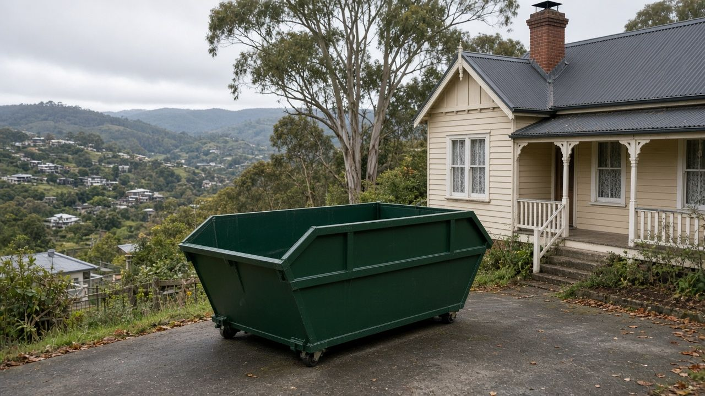
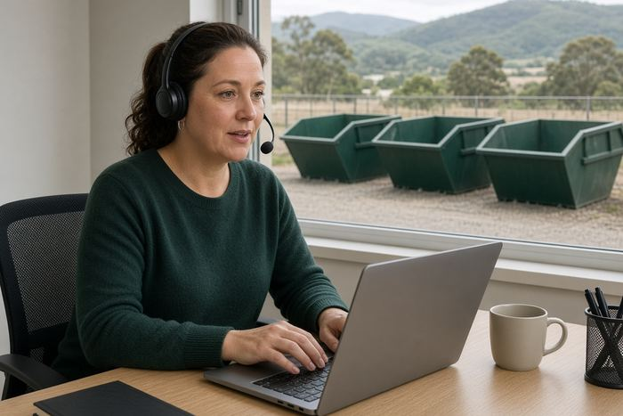
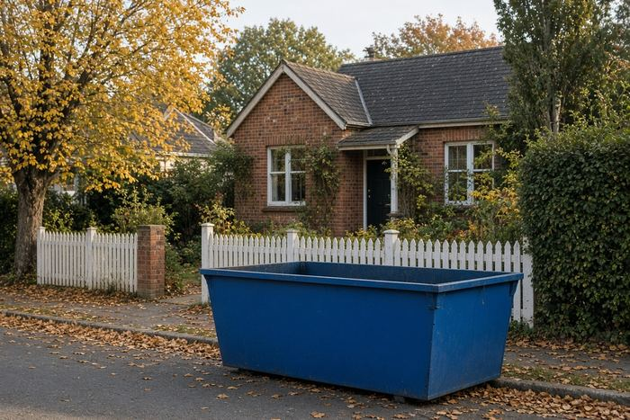
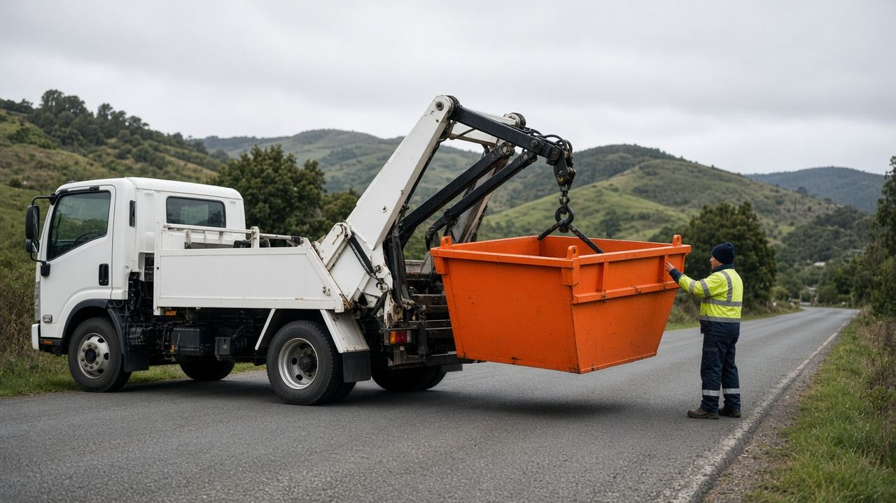
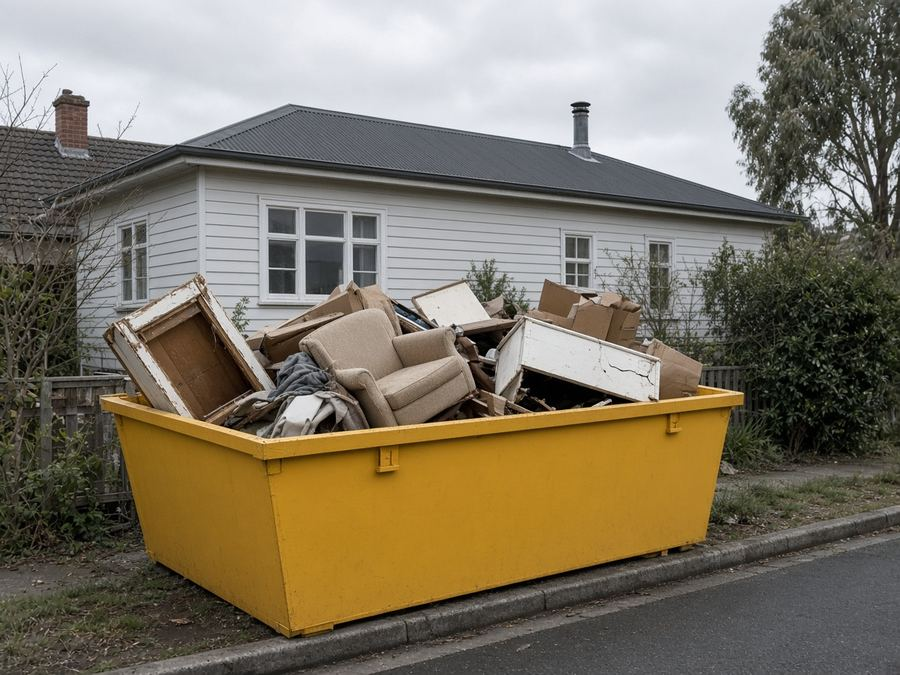
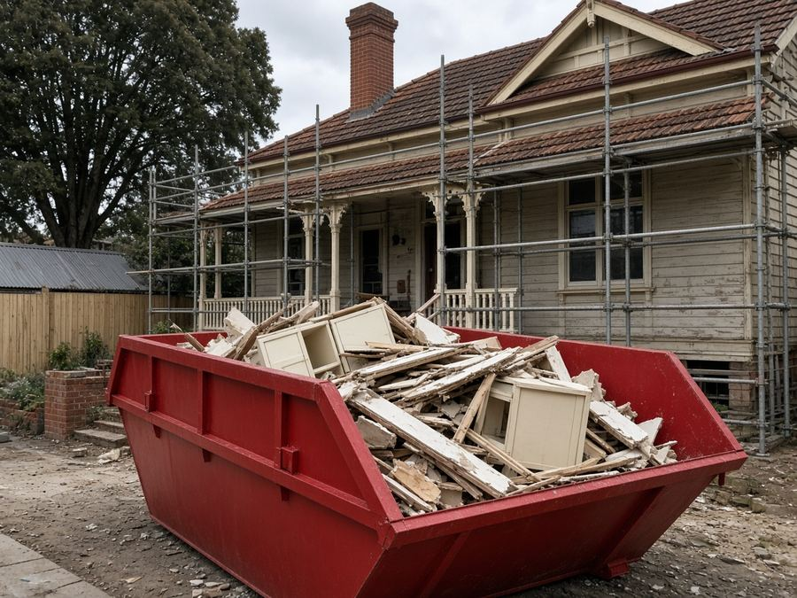
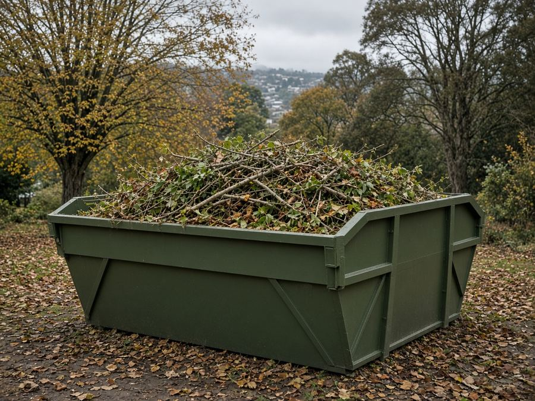
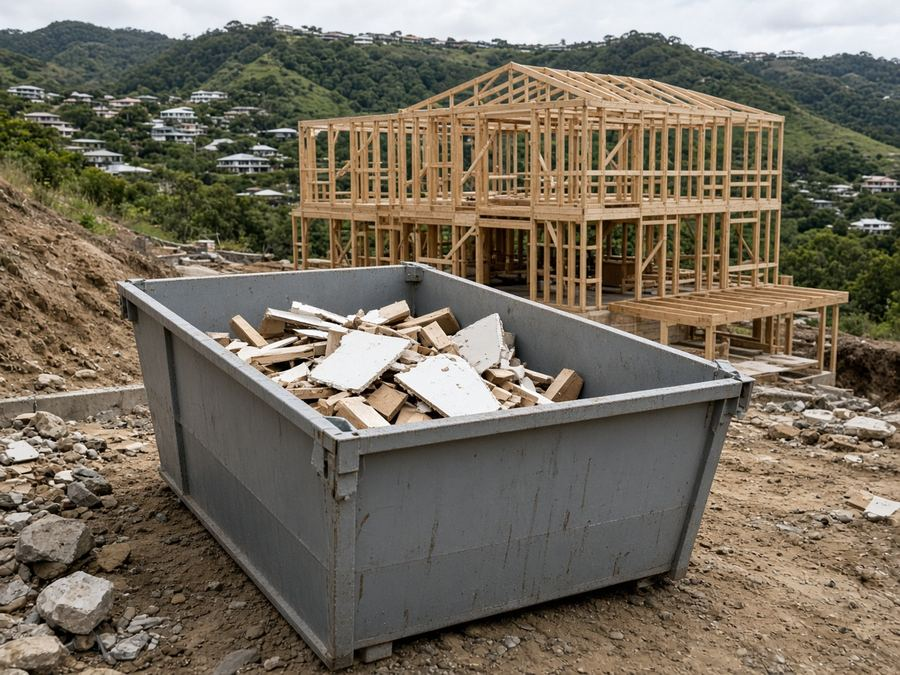
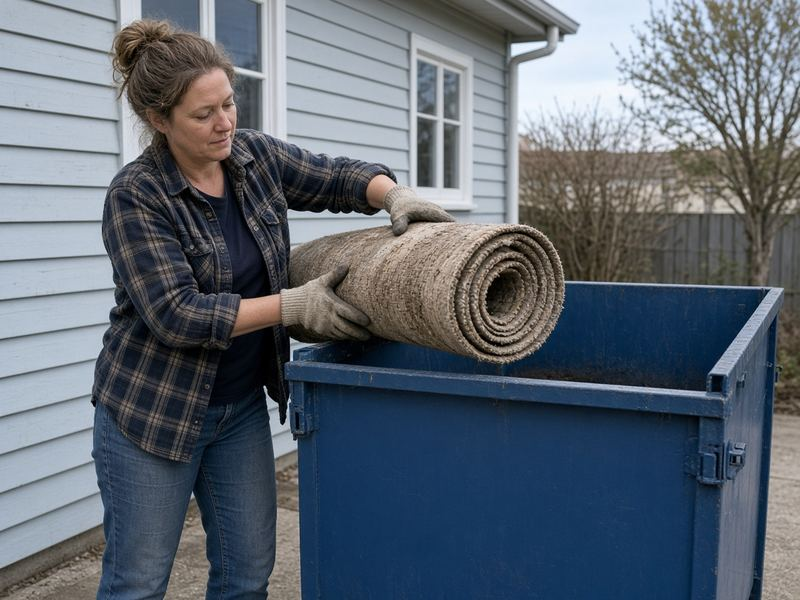

Skip Bins Launceston: Free Skip Bin Hire Quotes Across Launceston
In short: Launceston Skip Bins is a free quote service, not a skip hire company. Tell us your suburb and job, and we pass it to one local skip bin operator, who quotes you directly.
Renovating a weatherboard in Newstead, clearing out a garage in Kings Meadows or raking up autumn leaves in Trevallyn? Tell us your suburb, skip size and waste type, and we'll pass it to one local skip bin operator for a free, no-obligation quote.
Last updated: 24 October 2026
Get a free skip bin quote in Launceston
- Free quote for your exact job
- One local operator, not a call-centre auction
- Launceston, Kings Meadows, Newnham, Trevallyn and surrounds
- No obligation to book
How it works
- 1
Tell us about the clean-up
Choose your suburb, skip size and waste type in the quote form and add your details.

2We pass it to one local operator
Your enquiry goes to one operator who services Launceston or your part of the Tamar, not to a list of companies.

3They confirm price and delivery
The operator rings you, confirms price and drop-off, and you only book if it suits.
Launceston Skip Bins is a referral and quote service run by Raf Web Studio. We don't own trucks or bins and we don't take payments. The operator who quotes you supplies the skip and sets the price and hire terms.
Skip bin sizes for Launceston jobs
Launceston has plenty of older weatherboard and Federation homes, steep streets and leafy gardens. A 2–3 m³ skip handles a shed or garage, 4–6 m³ a bathroom, kitchen or autumn garden clean-up, and 8–12 m³ a whole house or a building job. Skips are measured in cubic metres (m³). Wheelie bin comparisons assume a standard 240-litre bin (0.24 m³). Trailer loads assume a 6×4 box trailer loaded level with its sides, roughly 1 m³. Shapes and dimensions vary between operators, so we don't list exact measurements.


Illustrations are approximate and not to an exact scale.
Mini skip
≈ 8 wheelie bins · ≈ 2 trailer loads
A shed or garage clean-out, or a small load of soil, rock or broken concrete.
Small skip
≈ 13 wheelie bins · ≈ 3 trailer loads
A backyard clean-up or a room or two of old furniture.
Bathroom or laundry reno
≈ 17 wheelie bins · ≈ 4 trailer loads
A bathroom or laundry renovation, or old carpet and underlay.
Kitchen reno or big clean-up
≈ 25 wheelie bins · ≈ 6 trailer loads
A kitchen renovation or a big autumn garden clean-up.
House clear-out
≈ 33 wheelie bins · ≈ 8 trailer loads
Moving house, downsizing or clearing a deceased estate.
Large renovation
≈ 38 wheelie bins · ≈ 9 trailer loads
A large renovation in a weatherboard or Federation home.
Builders and big jobs
≈ 50 wheelie bins · ≈ 12 trailer loads
Building sites, extensions or a big property clean-up. Needs good access.
Some operators offer skip bags or smaller bins for steep or narrow sites. Heavy waste (soil, rock, concrete) usually needs a smaller bin because of weight limits.
What can and can't go in a skip
Waste type matters as much as size. Operators tip loads at licensed facilities such as the Launceston Waste Centre at Mowbray, and each type of waste costs a different amount to dispose of.
Usually accepted
- General household waste: furniture, toys, clothes, boxes, cupboard contents and general junk.
- Green waste: autumn leaves, prunings, lawn clippings, hedge trimmings and fallen branches (often cheaper on its own, with no dirt or rubbish mixed in).
- Renovation waste: timber, plasterboard, old cabinets, carpet, tiles and fittings.
- Heavy or clean fill: soil, sand, concrete, bricks, rock and pavers (often needs its own bin and has a lower weight limit).
- Scrap metal: old roofing iron, fencing, heaters and outdoor furniture.
Not accepted, or extra charge
- Asbestos and fibro: never in a normal skip (see below).
- Tyres: usually banned or charged per tyre.
- Car and household batteries: a fire risk in a skip.
- Gas bottles and aerosols: can explode when compacted.
- Paint, oils, chemicals and liquids: including heating oil, paint, pool chemicals and garden sprays.
- Mattresses: often accepted for an extra fee.
- Food waste, medical waste and e-waste: check first. Many operators won't take TVs, computers or fluorescent tubes.
A note on asbestos
Many older Launceston homes and sheds have fibro linings, eaves or roofing that may contain asbestos. In Tasmania, WorkSafe Tasmania says you don't need a licence to remove less than 10 m² of non-friable (bonded) asbestos, as long as it's done in line with the code of practice How to Safely Remove Asbestos. More than 10 m², or any friable asbestos, needs a licensed removalist. See WorkSafe Tasmania's licensing guidance. If you suspect asbestos, say so on the quote form. Never hide it in a general skip.
Dropping things off yourself
The City of Launceston's Launceston Waste Centre is on Cavalry Road, Mowbray. Council lists it as open 7:30am to 4:15pm daily, closed Good Friday and Christmas Day, and it has the Uptipity resale shop for reusable goods. Asbestos is accepted only on weekdays between 10am and 2pm, you must register first on 03 6323 3000, and it must be double-wrapped in plastic at least 200 microns thick. Check the City of Launceston website for fees and accepted items.
Skip bin prices in Launceston
Skip bin prices depend on the bin size, what's going in it, how long you keep it and how far the truck travels, so we don't publish a price list. Tell us about your job and a local operator will quote for it. Get a free quote.
Prices vary by size, waste type and job. The operator quotes for your exact bin size, waste type and address.
What changes the price
Size and weight
Bigger bins cost more, though the cost per cubic metre usually drops. Heavy waste such as soil, concrete and bricks is limited by weight.
Waste type
Clean green waste and general household rubbish usually cost less to tip than mixed building waste, soil or concrete.
Distance and hire length
Deliveries further out, such as Lilydale or St Leonards, steep driveways, extra hire days and street permits can add to the price.
To keep costs down, sort heavy and green waste from general rubbish, book the smallest bin that fits and only hire for the days you need.
Putting a skip on the street: City of Launceston rules
Last updated: 24 October 2026
On your own property
Your own driveway, yard or a firm patch of ground is the easiest place for a skip. Council's permit is for skips on a road, footpath or other public land, so a bin wholly on your property generally doesn't need it. On steep blocks, check the truck can safely reverse in and that the bin sits level.
On the road, footpath or nature strip
The City of Launceston requires an Occupation of Roads, Parks and Public Reserves Permit for a skip bin on a road, footpath or nature strip. Council asks for applications at least 10 working days ahead, the skip can't be placed until the permit is issued, and the permit must be fixed where it can be seen on the bin. Fees apply, reflective markers are needed if the bin stays out overnight, and a skip in a metered parking bay adds bay-hooding fees. Council can remove bins placed without a permit.
The applicant needs $20 million public liability insurance and may need a traffic management plan, so the skip company usually applies. Before you book a skip on the street, check with the operator and the City of Launceston on 03 6323 3000 or contactus@launceston.tas.gov.au, or visit the council website. Mention it on the quote form too.
Wherever the skip goes, keep it clear of driveways, hydrants, bus stops and footpaths, and don't fill it above the rim.

Free skip bin quotes across Launceston
Get a free quoteSkip bin guides for Launceston
Plain-English guides to sizes, waste rules and City of Launceston permits, plus pages for nearby suburbs.
Local area guides
Areas we cover around Launceston
We take quote requests from Launceston and nearby suburbs. The operator confirms delivery to your address. Riverside and Legana (West Tamar Council) and Prospect Vale and Hadspen (Meander Valley Council) have different councils, so check street permits with them.
Inner Launceston
- Launceston
- East Launceston
- South Launceston
- West Launceston
- Invermay
- Newstead
- Trevallyn
South
- Kings Meadows
- Youngtown
- Summerhill
- Norwood
- Punchbowl
- Prospect
- St Leonards
- Waverley
North
- Mowbray
- Newnham
- Ravenswood
- Rocherlea
- Lilydale
Not listed? Choose "Other" in the form and tell us your suburb.
Common skip bin jobs in Launceston
The jobs we see most around Launceston.

House and garage clean-outsMoving, decluttering or clearing a rental between tenants.
Heritage and weatherboard renosOld linings, timber and fittings. Get any fibro checked before it goes in a bin.
Autumn and garden clean-upsLeaves, prunings and fallen branches. Keep it green-only for a better rate.
Building and extensionsBuilders' waste from extensions and new homes on Launceston's hilly blocks.Downsizing
Moving from a family home to something smaller. A larger skip and a flexible hire period help.
Steep and narrow streets
Hilly suburbs like Trevallyn and West Launceston can make delivery tricky. Mention slope and access in the form.
Quick answers
What areas does Launceston Skip Bins cover, and is there a call-out fee?
We take skip bin quote requests from Launceston and nearby areas, including East Launceston, South Launceston, West Launceston, Invermay, Newstead, Trevallyn, Kings Meadows, Youngtown, Summerhill, Norwood, Punchbowl, Prospect, St Leonards, Waverley, Mowbray, Newnham, Ravenswood, Rocherlea, Lilydale. The quote service is free, so there's no call-out fee from us. The operator includes delivery and pick-up in its quote. Deliveries further out, such as Lilydale or St Leonards, steep driveways, extra hire days and street permits can add to the price.
Do I need a licence or permit for a skip bin?
You don't need a licence to hire a skip. A skip wholly on your own property generally doesn't need approval. On a road, footpath or nature strip, yes: the City of Launceston requires an Occupation of Roads, Parks and Public Reserves Permit, applied for at least 10 working days ahead. The skip company usually applies. Asbestos is different: asbestos can't go in a general skip. In Tasmania, more than 10 m² of bonded asbestos, or any friable asbestos, needs a licensed removalist.
What affects the price of a skip bin?
Skip bin prices depend on the bin size, the type and weight of the waste, how long you keep the bin, how far the truck travels and how easy access is. We don't publish a price list. Tell us about your job and a local operator will quote for it.
Who supplies the skip?
Launceston Skip Bins is a free referral and quote service run by Raf Web Studio. We don't own skips or trucks. We pass your request to one local skip bin operator who services your area, and they quote, supply the skip and set the hire terms.
Skip bin FAQ for Launceston
How much does a skip bin cost in Launceston?
It depends on the size, waste type, hire period and distance. Tell us about your job and a local operator will quote for it.
Do I need a permit for a skip on the street in Launceston?
Yes. The City of Launceston requires an Occupation of Roads, Parks and Public Reserves Permit for a skip on a road, footpath or nature strip. A skip wholly on your own land generally doesn't need one.
How far ahead do I need to apply?
Council asks for at least 10 working days. The applicant needs $20 million public liability insurance, so the skip company usually applies.
Do you cover Kings Meadows, Newnham and Trevallyn?
Yes, we take requests from across the City of Launceston, including Kings Meadows, Newnham, Ravenswood, Youngtown and Trevallyn. The operator confirms delivery.
Where is the Launceston tip?
The Launceston Waste Centre is on Cavalry Road, Mowbray. Council lists it as open 7:30am to 4:15pm daily, closed Good Friday and Christmas Day.
Can I take asbestos to the Launceston Waste Centre?
Only on weekdays between 10am and 2pm, after registering on 03 6323 3000, and double-wrapped in plastic at least 200 microns thick.
What size skip do I need?
2–3 m³ for a shed or garage, 4 m³ for a bathroom, 6 m³ for a kitchen or autumn clean-up, and 8–12 m³ for a house clear-out or building job.
Can I put asbestos or fibro in a skip?
No. Asbestos can't go in a general skip. In Tasmania, more than 10 m² of bonded asbestos, or any friable asbestos, needs a licensed removalist.
Can I put soil, rocks or concrete in a skip?
Usually, but heavy waste has weight limits and often needs its own, smaller bin. Choose "Soil, concrete or bricks" in the form.
What can't go in a skip?
Asbestos, tyres, batteries, gas bottles, chemicals, paint, oils and liquids. Mattresses and e-waste are often extra or not accepted. The operator who quotes you will confirm their list.
How long can I keep the skip?
Commonly a few days to a week, with extra days by arrangement with the operator.
Is Launceston Skip Bins a skip hire company?
No. It's a free referral and quote service run by Raf Web Studio. One local operator quotes you and supplies the skip.

Ready for a clear-out?
Tell us your suburb, skip size and waste type and we'll pass it to one local Launceston operator for a free quote.